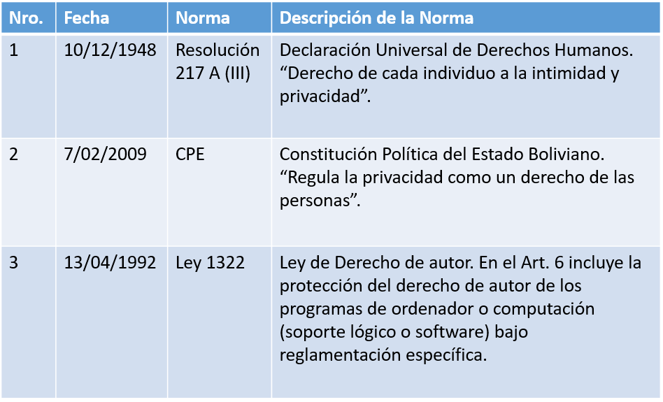
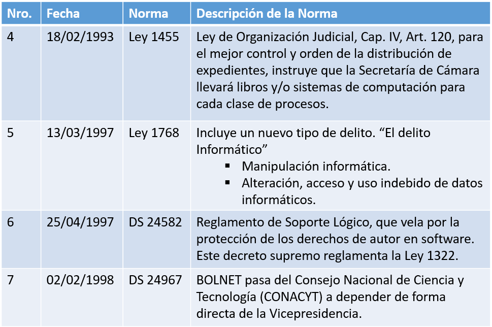
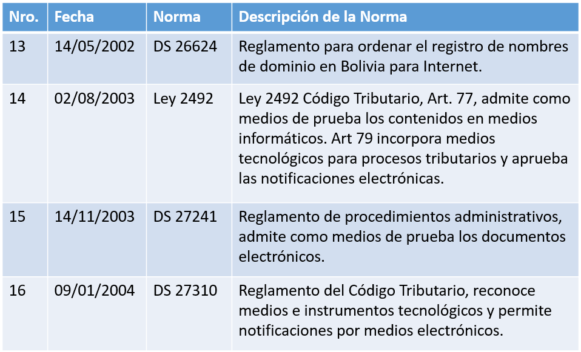
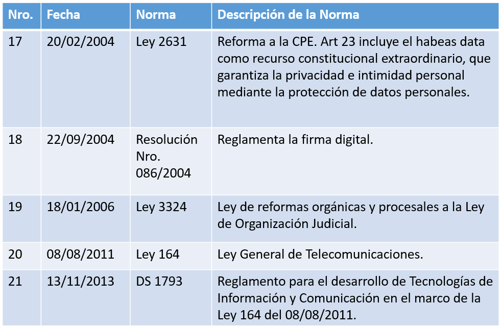

Informática Jurídica:
Se refiere al estudio de la utilización de aparatos o elementos electrónicos, como la computadora, en la aplicación del Derecho; su área de interés se centra en la ayuda que el uso de computadoras o cualquier nueva tecnología presta al desarrollo y aplicación del Derecho. Analiza el aspecto instrumental de la informática para el ejercicio legal.
Derecho Informático:
Toma como objeto del Derecho a la informática, es decir, a los procedimientos, normas y relaciones jurídicas que surgen como consecuencia del uso de la informática en las diversas actividades de la sociedad, como por ejemplo el comercio electrónico, el fraude por internet, entre otros.



